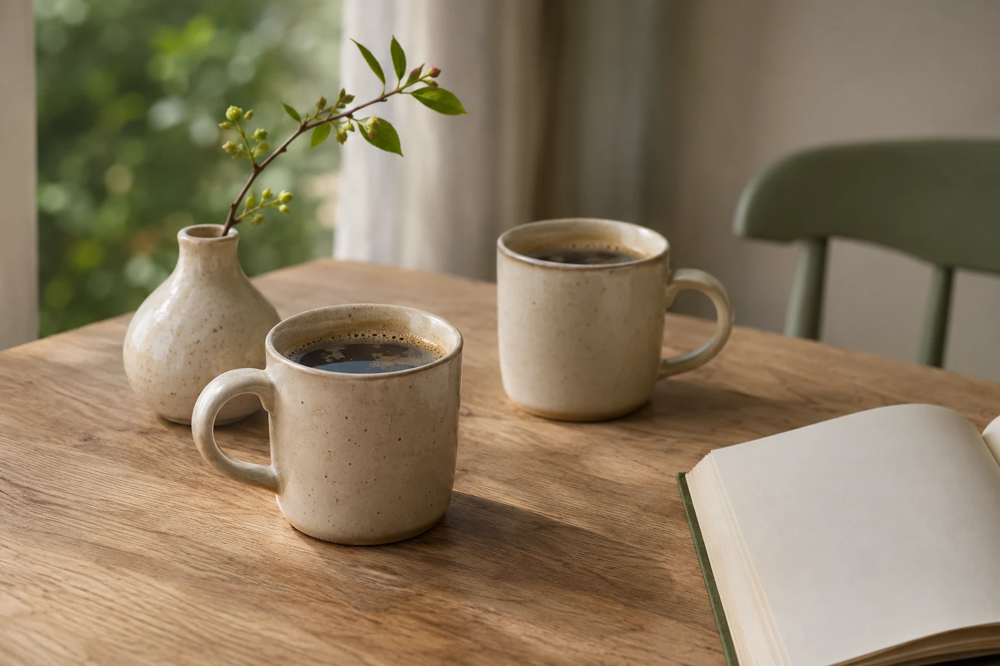

Praktisk hjælp
Hjælp til de gøremål, der gerne må fylde lidt mindre i din hverdag.
- Rengøring og lettere oprydning
- Tøjvask og det praktiske derhjemme
- Indkøb og hverdagens ærinder
Personlig hjælp og samvær til ældre
Jeg hedder Julie. Jeg hjælper dig med hverdagens gøremål og har tid til en snak, en gåtur og det, der betyder noget for dig.
Hos Varme Hænder er det altid mig, der kommer.
Du er også velkommen som pårørende.

Det kan jeg hjælpe med
En hånd med det praktiske. Selskab til kaffen. Eller hjælp, når teknikken driller. Vi tager udgangspunkt i din hverdag.
Hjælp til de gøremål, der gerne må fylde lidt mindre i din hverdag.
Nogen at dele en stund med. Vi finder noget, du har lyst til at være sammen om.
Rolig hjælp til at finde vej i det digitale. Vi tager det trin for trin.
En at følges med, når du skal til en aftale eller gerne vil lidt ud.
Er du i tvivl om, hvorvidt jeg kan hjælpe med netop dit ønske? Spørg mig endelig
Mennesket bag Varme Hænder
Én at kende.
Én at lave aftaler med.
Én, der kommer igen.
Jeg hedder Julie Munthe, bor i Gistrup og står bag Varme Hænder. Det er min virksomhed, og jeg er den eneste medarbejder. Derfor ved du altid, hvem du har kontakt med, og hvem du lukker ind.
Jeg har en pædagogisk og administrativ baggrund. Den tager jeg med ind i arbejdet med både mennesker og hverdagens praktiske opgaver.
For mig begynder hjælpen med at lytte. Hvad vil du gerne have en hånd med? Hvad kan du lide at lave? Og hvad gør en god dag for dig?
Sådan kommer vi i gang
Til dig, der er pårørende
Måske leder du efter hjælp til din mor, far eller en anden, der står dig nær. Du er velkommen til at tage den første kontakt.
Vi taler om behovet og om, hvordan din pårørende bliver inddraget. Hjælpen skal tage udgangspunkt i den person, der skal have den.
Du behøver ikke have det hele på plads, før du skriver.
Et enkelt sted at begynde
Du behøver ikke en færdig plan. Vi begynder med en snak.
Fortæl lidt om dig selv eller din pårørende, og hvad du gerne vil have hjælp til.
Vi finder ud af, om jeg er den rette til at hjælpe, og taler om opgaver, tid og pris.
Når det føles rigtigt, aftaler vi et besøg. Og når det ringer på, er det mig, der står der.
Pris & aftale
Prisen er den samme, uanset om du har brug for praktisk hjælp, samvær, teknisk hjælp eller ledsagelse.
Et besøg på 2 timer koster 850 kr.
Du kan få hjælp til flere ting under samme besøg.
Vi aftaler opgaver, varighed og samlet pris, før jeg kommer. Ekstra tid aftaler vi undervejs. Du behøver ikke købe et abonnement eller klippekort.
Der lægges ikke moms oveni.
Ved besøg i andre områder aftaler vi eventuel kørsel på forhånd. Udlæg til varer, billetter og transport under ledsagelse betales særskilt efter aftale.
Tal med Julie om et besøgGodt at vide
Du er altid velkommen til at spørge mig om det, der er vigtigt for dig.
Kontakt JulieJa. Varme Hænder er min virksomhed, og jeg er den eneste medarbejder. Det er mig, Julie, du har kontakt med, og mig, du møder.
Jeg har base i Gistrup nær Aalborg. Kørsel til besøg i Gistrup og Aalborg by er inkluderet i timeprisen. Bor du et andet sted i området, så ring eller skriv din by eller dit postnummer. Så taler vi om mulighederne og eventuel kørsel, før vi aftaler et besøg.
Ja, du er velkommen til at tage den første kontakt. Vi taler om jeres ønsker og om, hvordan din pårørende bedst bliver inddraget.
Du må gerne fortælle om flere behov, for eksempel indkøb og en gåtur eller tøjvask og hjælp med mobilen. Så taler vi om, hvad der kan lade sig gøre.
Jeg kan guide dig og hjælpe med at finde rundt. Du bruger selv dit MitID og godkender selv. Dine personlige koder bliver hos dig, og jeg ser væk, når du taster dem.
Prisen er 425 kr. pr. time som samlet pris for private. Mindst én time pr. besøg, derefter aftalte halve timer til 212,50 kr. Kørsel til besøg i Gistrup og Aalborg by er inkluderet. Eventuel kørsel til andre områder og udlæg aftales på forhånd.
Ring til mig på 42 42 72 43, eller skriv til julie@varmehaender.dk. Så taler vi om det, du har brug for.
Du har direkte kontakt med mig
Ring og fortæl om det, du har brug for – for dig selv eller en pårørende. Du er også velkommen til at skrive. Et par linjer er nok.
Jeg glæder mig til at høre fra dig.
Julie
Varme Hænder · Gistrup
Mailknappen åbner dit mailprogram. Du kan også kopiere adressen og skrive fra din egen mail.
Send mig en kort mail med dit telefonnummer og et tidspunkt, der passer dig godt.
Åbn en mail med ønske om opkaldSkriv gerne kort om dit behov. Undlad CPR-nummer, koder og følsomme helbredsoplysninger i din første mail.